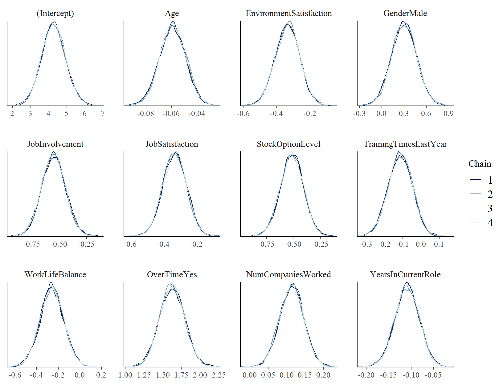
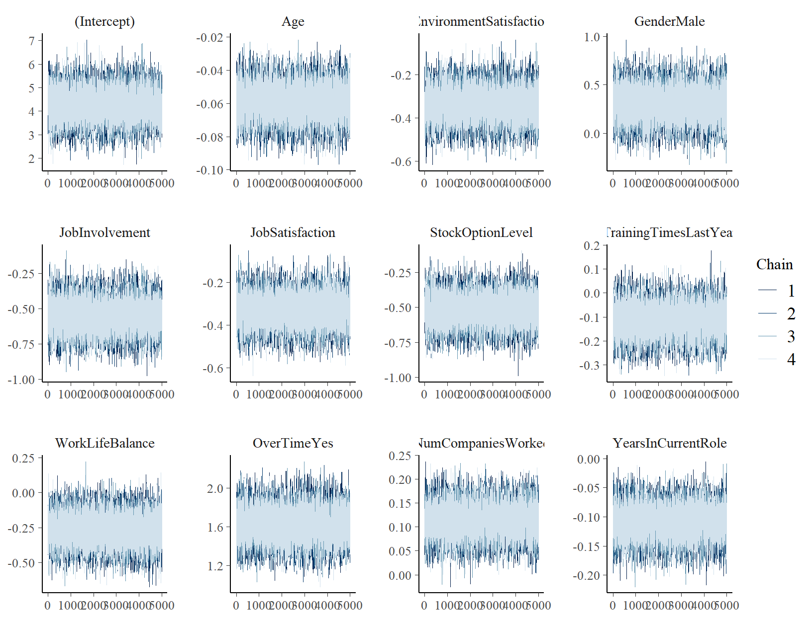
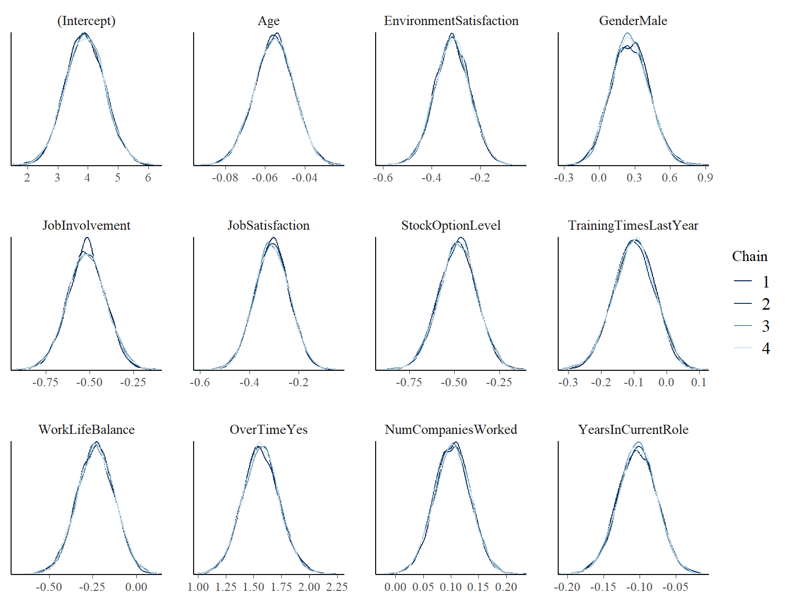
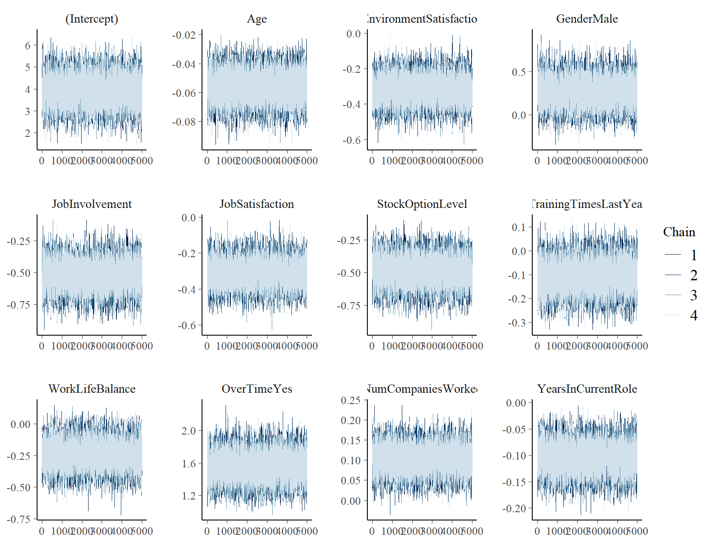
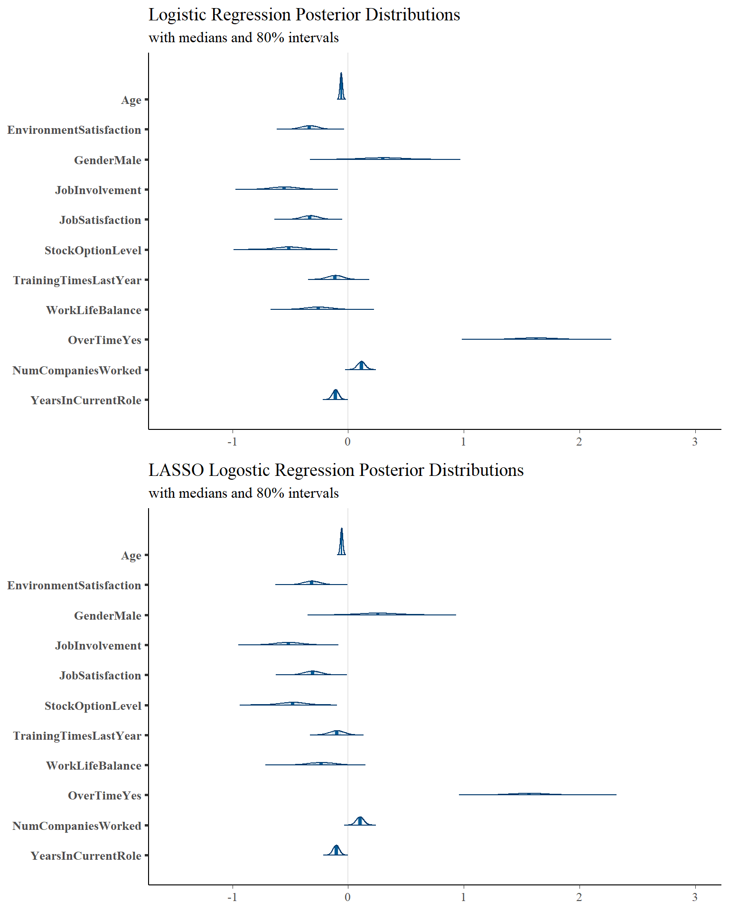
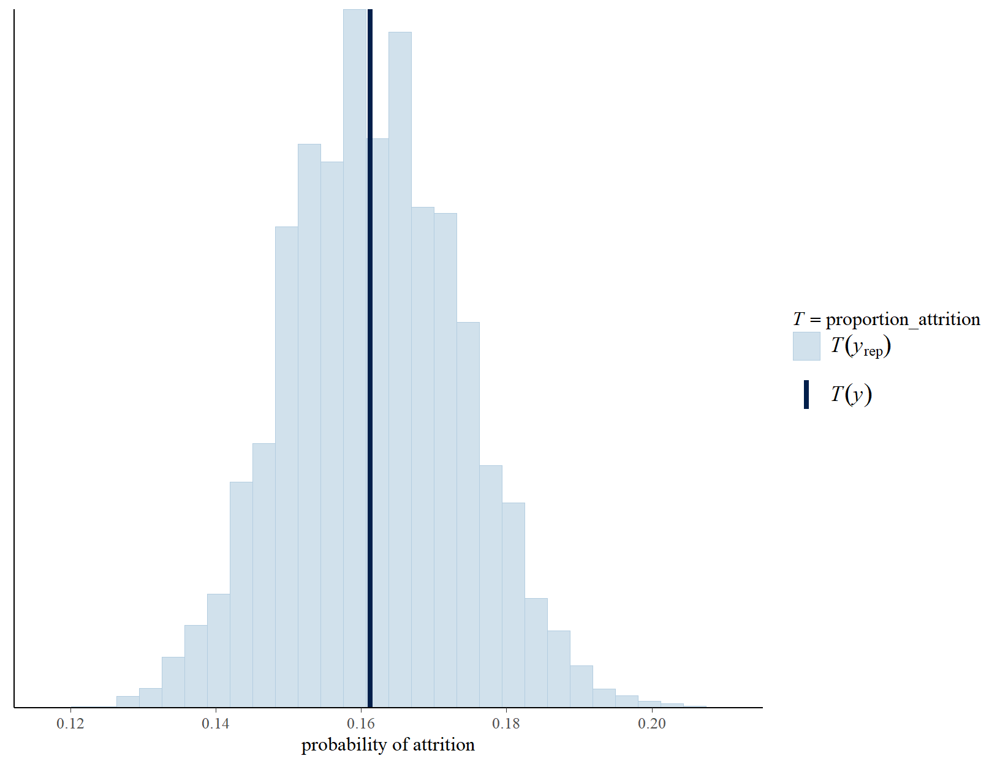
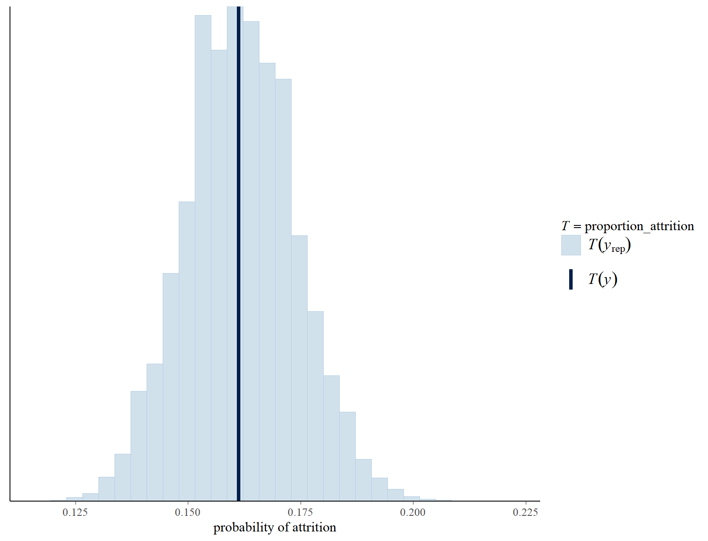

Bayesian Analysis Final Project
As data has grown globally, so has its usage. For businesses, data analytics has become quite a powerful tool. Over the years, it has become more beneficial for businesses to become data-driven. Used to drive strategy, maximize efficiencies and sales, identify new opportunities, and much more–businesses can use data analytics to leverage insights to make wise business decisions.
Developing strategies through data analysis might require descriptive, diagnostic, predictive, or prescriptive methods. The focus of this work will be on predictive modeling, specifically classification modeling. Classification modeling uses supervised learning methods to predict the class or category of new data. Countless business scenarios can use this type of data modeling, and every business could profit from utilizing them. A hotel could profit from predicting whether or not a booking will be canceled, a service company could profit from predicting whether or not a customer will cancel their subscription, and a marketing team could profit from predicting whether or not consumers will respond positively to their marketing campaigns.
Although many business scenarios would benefit from classification modeling, for this work, I will focus on employee attrition. Businesses hire employees, fire employees, and lose them through other means. Attrition impacts all businesses, and there is a great motivation to understand the driving factors of employee attrition and minimize it. Just like businesses work to keep their customers from leaving their services, businesses also work to keep their employees from leaving the company. Losing employees represents a significant loss to the company– not only does it cause a disruption in the business, but it also costs time, money, and effort recruiting a replacement, hiring that replacement, and training them. While attrition cannot be completely eliminated, it can be cut off through an improved understanding of the workforce and targeted intervention. There would be multiple advantages from building a classification model that accurately predicts which employees are likely to quit. It could shed light on the relationships between employee characteristics and their likelihood of attrition, which would provide HR with a better understanding of their workforce and push them to implement widespread changes. Discovering employees with a higher likelihood of attrition would also provide HR the opportunity to step in and resolve any potential situations before these employees leave.
Now that I have discussed the business scenario and the importance of building a classification model to predict employee attrition, I will describe my approach to building such models.
In this analysis, I will be using Bayesian statistics, an approach to data analysis that combines one’s prior knowledge with new evidence to inform the probability of an event or outcome. This method of statistical inference is based on Bayes’ Theorem, a mathematical formula that updates prior probabilities (i.e., the belief about the likelihood of the event occurring) based on new data (i.e., the information that the new data provides about the likelihood of the event occurring). Instead of returning a single posterior probability, the theorem produces a full posterior distribution of the given parameter.
If the prior knowledge is weak or unreliable, the data will be weighted more heavily when determining the posterior probability distribution. If the new data is unreliable or minimal, the prior knowledge will be more heavily weighted. In simple terms, Bayesian statistics depend on both the probability of the observed data and prior knowledge while finding a balance between the two.
I will briefly go over the three Bayesian models I will build: logistic regression, LASSO logistic regression, and Naive Bayes. Naive Bayes and logistic regression are two popular models used for classification, whose algorithms are similar yet different in many ways. I will briefly go over their differences first and then describe how LASSO logistic regression differs from regular logistic regression.
Logistic Regression:
Naive Bayes:
LASSO Logistic Regression is similar to regular logistic regression, except it utilizes regularization through shrinkage priors. It imposes a constraint on the model parameters that causes the coefficients for some variables to shrink toward zero, keeping the more critical variables the same. This technique effectively increases the bias of the model in order to lower its variance. This method is excellent for feature selection when there is high dimensional data (ie when there are many variables compared to the number of observations) and can be useful for improving predictions.
I will build, interpret, and evaluate the posterior models in this work. For each model, I will walk through determining the model distribution, specifying priors, and setting up the posterior model. I will also show how to interpret these models, and then evaluate their accuracy all together at the end. Throughout the work, I will provide both the code and the results so that they may be replicated on this dataset or tweaked and used on another dataset.
I hope this work can explain and illustrate the benefits of utilizing Bayesian statistics for business intelligence analytics. I would like to introduce analysts to Bayesian modeling techniques and encourage them to employ these techniques, using my code and output as a reference if helpful. While there is work that describes the purpose and math behind Bayesian modeling and techniques, and some that show model outputs, minimal work walks through each step while providing the actual code. In providing examples of how to construct Bayesian models, interpret them, and evaluate them while providing the code and the output, I hope analysts may replicate or further research the techniques for future usage.
The dataset I will use for my analysis details roughly 1,500 employees of a fictitious company. The data includes employees who currently work for the company and employees who have left the company. It contains 30 additional variables for each employee, including gender, age, and if they work overtime. This data was created by IBM and can be downloaded from Kaggle here.
#Import data, remove unused variables
Emp_Attrition <- read.csv("attrition.csv")
Emp_Attrition <-
Emp_Attrition %>%
mutate(Attrition = ifelse(Attrition=="Yes", 1, 0)) %>%
rename(Age = "ï..Age") %>%
select(Attrition, Age, EnvironmentSatisfaction, Gender, JobInvolvement, JobSatisfaction, StockOptionLevel, TrainingTimesLastYear, WorkLifeBalance, OverTime, NumCompaniesWorked, YearsInCurrentRole)
| Name | Descrition | Data Type |
|---|---|---|
Attrition
|
Whether or not employee leaves company (0,1). | Integer |
Age
|
Age of employee. | Integer |
EnvironmentSatisfaction
|
0 - 4 rating of employee’s environment satisfaction (1 = ‘Low’, 2 = ‘Medium’, 3 = ‘High’, 4 = ‘Very High’). | Integer |
Gender
|
Gender of employee (Female, Male). | Character |
JobInvolvement
|
0 - 4 rating of employee’s involvement (1 = ‘Low’, 2 = ‘Medium’, 3 = ‘High’, 4 = ‘Very High’). | Integer |
JobSatisfaction
|
0 - 4 rating of employee’s job satisfaction (1 = ‘Low’, 2 = ‘Medium’, 3 = ‘High’, 4 = ‘Very High’). | Integer |
StockOptionLevel
|
How much company stocks employee owns. | Integer |
TrainingTimesLastYear
|
Number of training sessions employees received the previous year. | Integer |
WorkLifeBalance
|
0 - 4 rating of employee work/life balance (1 = ‘Bad’, 2 = ‘Good’, 3 = ‘Better’, 4 = ‘Best’). | Integer |
OverTime
|
Whether or not the employee works overtime (Yes, No). | Character |
NumCompaniesWorked
|
Number of companies employee has worked at previously. | Integer |
YearsInCurrentRole
|
Number of years employee has worked their current role. | Integer |
We will start with our predicted variable, Attrition. Because this is a binary categorical response variable, we let \(Y_i\) be the 0 or 1 indicator of whether or not any given employee i quits. When importing the dataset, we mutated this variable to reflect this.
\[Y = \begin{cases} 1 & \text{Employee Leaves Company} \\ 0 & \text{Employee does not Leave Company} \\ \end{cases}\]
Since \(Y_i\) is a discrete binary variable, the Bernoulli probability model is the most appropriate model structure for the response variable.
\[Y_i|π_i∼Bern(π_i)\text{ where } π_i \text{ denotes the probability of attrition for employee i}.\]
Now we must describe how the probability of attrition \(π_i\) depends on our predictors, \((X_1, X_2, ... X_{11})\) by writing the Bernoulli mean \(π_i\) as a linear function of the predictors. We will assume that \(π_i\) depends on our predictors through the logit link function \(g(π_i)=log(\frac{π_i}{1-π_i})\), which evaluates the log(odds of attrition) to be linearly related to our predictors.
\(Y_i|β_{0c},β_1,β_2,...β_{11} ind∼Bern(π_i) \text{ with } log (\frac{π_i}{1−π_i})=β_{0c}+β_1X_{1+}β_2X_{2}+...+β_{11}X_{11}\)
Alone, the model we specified previously is a simple logistic regression model. It does not take into account any prior knowledge we might have about the predictors or the predicted variable, and this is where the Bayesian techniques come into play. We can incorporate prior models for the logistic regression parameters \(β_{0c}, β_1 ... β_{11}\) to go from a frequentist model to a Bayesian model. So just as \(π_i\) is written as a linear function of \((X_1, X_2, ... X_{11})\), we can write each regression parameter as a linear function. To simplify the model and stay consistent with the rstanarm framework we will use, we will make the assumption that all prior models of these regression parameters are independent of each other.
To determine the structure of these priors, we must consider what values these parameters could take. The intercept and slope regression parameters can take any values in the real line, meaning the model line can cross anywhere on the y-axis, and the slope of the line can be any value: positive, negative, or 0. To this end, we will specify these prior models as Normal, since Normal models can also take any values on the real line.
I will write out a couple of these prior models as examples: \[β_{0c}\text{ ~ }N(m_0, s_0^2)\] \[β_{1}\text{ ~ } N(m_1, s_1^2)\]
\[β_{11}\text{ ~ } N(m_{11}, s_{11}^2)\]
Next, we will tune our prior models for the parameter coefficients \((β_{0c},β_1...β_{11})\).
I will manually calculate the hyperparameters \((m_0, s_0)\) of the centered intercept \(β_{0c}\). We use the centered intercept in place of the model baseline \(β_0\) because it is more intuitive. The centered intercept reflects the typical attrition at the typical values for each predictor, whereas the model baseline would reflect the attrition when all predictors are at 0 or at what the model assumes is the baseline. It is this centered intercept we will calculate that we will use to simulate our logistic regression model.
Onto the calculation: from our data, we can calculate that 16% of all the employees have left the company. We have a prior understanding that there’s a roughly 16% chance that the average employee will leave the company, so \(π ≈ 0.16\).
We can calculate the prior mean for \(β_{0c}\) on the log(odds) scale: \[log(\frac{.16}{1-.16}) = -1.66\] We have a vague understanding that the log(odds of attrition) might range from roughly -3.32 to 0 (−1.66±2∗0.83). Since this is not very meaningful, we can transform this to find the odds and probability of attrition for an average employee.
\[\text{odds: } (e^{-3.32}, e^0) = (0.036, 1)\] \[\text{probability: } (\frac{.036}{1+.036}, \frac{1}{1+1}) = (.035,0.5)\] From this we can determine:
There is quite a bit of variance in our prior understanding of the probability of the average employee quitting. This large variance means our prior understanding is not very informative, so we can call this a weak prior.
Now that we have manually calculated the centered intercept, we will utilize the default framework of the prior models used by the rstanarm package to tune the rest of the hyperparameters to match our prior understanding of our model parameters \((β_{0c},β_1...β_{11})\). To do this, we will use the Markov chain Monte Carlo (MCMC) simulation techniques from the rstan package. Markov chains essentially mimic a random sample that eventually converges to the posterior. Each iterative sample depends on the previous sample; the samples are not independent and are not taken directly from the posterior pdf.
We will use stan_glm() to simulate 20,000 sets of parameters \((β_{0c},β_1...β_{11})\) from the prior models using MCMC, allowing us to specify our weakly informative priors. By setting prior_PD to TRUE, we simulate the prior model (we change this to FALSE to simulate the posterior model). We set the family to binomial to show that our logistic regression model has a data structure specified by a Bernoulli model. We can use the prior centered mean for \(β_{0c}\) that we calculated on the log(odds) scale to set the prior_intercept with a standard deviation of half its magnitude. Since we are unsure about our prior parameters, we set autoscale to TRUE.
#Simulate prior models
attrition_logistic_model_priors <- stan_glm(
Attrition ~.,
prior_intercept = normal(-1.66, .8),
prior = normal(0, 2.5, autoscale = TRUE),
data = Emp_Attrition,
family = binomial(),
prior_PD = TRUE,
chains = 4, iter = 5000*2, seed = 84735, refresh = 0)
Next we’ll use prior_summary() to find the adjusted prior parameters from the simulations.
priors <- prior_summary(attrition_logistic_model_priors)
priors$prior$adjusted_scale
[1] 0.2736615 2.2871107 5.1013676 3.5134015 2.2668620 2.9340083
[7] 1.9390809 3.5386915 5.5480786 1.0007970 0.6900098With our priors, we can write out our complete model:
\[\begin{array}{rll} Y_i | β_{0c},β_1,β_2,... β_{12}, \sigma & \stackrel{ind}{\sim} \text{Bern}(\pi_i) & \text{with } \log\left(\frac{\pi_i}{1 - \pi_i}\right) = β_{0c}+β_1X_{i1+}β_2X_{i2}+...+β_{11}X_{i11} \\ \beta_{0c} & \sim N(-.72, .36^2) & \\ \beta_1 & \sim N(0, 0.27^2) & \\ \beta_2 & \sim N(0, 2.29^2) & \\ \beta_3 & \sim N(0, 5.1^2) & \\ \beta_4 & \sim N(0, 3.51^2) & \\ \beta_5 & \sim N(0, 2.27^2) & \\ \beta_6 & \sim N(0, 2.93^2) & \\ \beta_7 & \sim N(0, 1.94^2) & \\ \beta_8 & \sim N(0, 3.54^2) & \\ \beta_9 & \sim N(0, 5.55^2) & \\ \beta_{10} & \sim N(0, 1.0^2) & \\ \beta_{11} & \sim N(0, 0.69^2) & \\ \end{array}\]Next, we will update our prior understanding of the relationships between attrition and our predictors using data to reach our posterior.
We can use the update() function to set our model’s prior_PD to FALSE, in effect simulating our posterior model using MCMC techniques with the same model features as the prior model attrition_logistic_model_priors.
#Simulate posterior models
attrition_logistic_model <- update(attrition_logistic_model_priors, prior_PD = FALSE)
Since MCMC simulations only approximate the posterior, and we cannot compare our simulation results to the “true” posterior, it is crucial to check up on our simulations before continuing with our model to make sure the chains are stable. We do this by running some diagnostic tests.
To see if there is consistency across the four chains we simulated, we can use mcmc_dens_overlay. It is okay and expected that the chains take different paths, but they should have similar features and produce similar posterior approximations.
Because chains for each variable produce similar posterior approximations, we can say that our simulation is both stable and has enough iterations. Running more iterations would not likely construct much different or improved posterior approximations.
mcmc_dens_overlay(attrition_logistic_model)

With a stable simulation, the trace plots produced by mcmc_trace() should essentially look like white noise, without resembling anything or hinting at any trends. None of the trace plots have any discernible trends or outliers, so we can say it is stable. With this, we can proceed to interpret the model output.
mcmc_trace(attrition_logistic_model)

I will use the posterior tidy() summary to find the posterior medians and 80% credible intervals for the regression coefficients. By performing a simple calculation, we can transform the log(odds) estimate to odds by setting e to the power of the estimate. In the first row, I will illustrate the simple transformation. This transformation will allow us to describe how the odds of attrition change based on the value of the predictor variable while controlling for the other predictors. I will pick out a couple of coefficients for interpretation, but all coefficients can be interpreted similarly.
These interpretations could give HR an idea of what factors have the most substantial influence over the odds of attrition. While some of the interpretations may seem obvious (i.e., greater job work/life balance leads to decreased odds of attrition), the magnitude of these coefficients’ impact on the attrition odds can convey what HR might focus on for minimizing attrition overall.
#Show model coefficients for interpretation
tidy(attrition_logistic_model, conf.int = TRUE, conf.level = 0.8)
# A tibble: 12 x 5
term estimate std.error conf.low conf.high
<chr> <dbl> <dbl> <dbl> <dbl>
1 (Intercept) 4.27 0.651 3.44 5.13
2 Age -0.0589 0.0102 -0.0720 -0.0460
3 EnvironmentSatisfaction -0.334 0.0735 -0.430 -0.243
4 GenderMale 0.301 0.166 0.0869 0.513
5 JobInvolvement -0.552 0.110 -0.691 -0.413
6 JobSatisfaction -0.330 0.0719 -0.421 -0.239
7 StockOptionLevel -0.512 0.106 -0.650 -0.377
8 TrainingTimesLastYear -0.112 0.0662 -0.198 -0.0298
9 WorkLifeBalance -0.259 0.109 -0.400 -0.118
10 OverTimeYes 1.62 0.168 1.41 1.84
11 NumCompaniesWorked 0.114 0.0329 0.0714 0.156
12 YearsInCurrentRole -0.109 0.0268 -0.144 -0.0744| Variable | Posterior Median Coefficient Transofrmation | 80% Confidence Interval Transformation | Interpretation |
|---|---|---|---|
Age
|
e^(-0.059) = 0.943 | (e^(-0.072), e^(-0.046)) = (0.931,0.955) | Each additional year the average employee has lived, the odds of attrition decrease by about 5.7%, or somewhere between 4.5% and 6.9%, for the average employee |
JobInvolvement
|
0.577 | (0.501,0.662) | Each additional rating in job involvement the odds of attrition decrease by about 42%, or somewhere between 33% and 50%, for the average employee |
TrainingTimesLastYear
|
0.894 | (0.82,0.97) | Each additional training they received the year prior the odds of attrition decrease by about 11%, or somewhere between 3% and 18%, for the average employee |
WorkLifeBalance
|
0.772 | (0.67,0.889) | Each additional rating in work/life balance the odds of attrition decrease by about 23%, or somewhere between 11% and 33%, for the average employee |
OverTimeYes
|
5.07 | (4.1, 6.28) | For employees that works overtime, the odds of attrition increase by about 5 times, or somewhere between 4.1 and 6.3 times, for the average employee |
I will go through these steps much more briefly. This model is almost identical to the previous model, so for the most part, the same steps and specifications coincide with what we have done previously.
The categorical response variable \(Y_i\) does not change from the previous model, so we will use the Bernoulli probability model again.
The centered intercept \(β_{0c}\) remains the same, and as I will show below, so do the other prior hyperparameters. Everything stays the same except the prior modeling. Instead of setting the prior to a normal distribution as we did for the regular logistic regression, we will set it to a laplace distribution with a lasso approach. More information about the lasso prior and the other prior options can be found here.
#Simulate prior models
attrition_lasso_model_priors <- stan_glm(
Attrition ~ .,
prior_intercept = normal(-1.66, .8),
prior = lasso(df = 1, location = 0, scale = NULL, autoscale = TRUE),
data = Emp_Attrition,
family = binomial(),
prior_PD = TRUE,
chains = 4, iter = 5000*2, seed = 84735, refresh = 0)
Again, we will use prior_summary() to find the adjusted prior parameters from the simulations. These match up with the priors from the regular logistic regression, meaning our complete model essentially looks identical.
priors <- prior_summary(attrition_lasso_model_priors)
priors$prior$adjusted_scale
[1] 0.2736615 2.2871107 5.1013676 3.5134015 2.2668620 2.9340083
[7] 1.9390809 3.5386915 5.5480786 1.0007970 0.6900098We will set the prior_PD to FALSE to simulate the posterior model.
#Simulate posterior models
attrition_lasso_model <- update(attrition_lasso_model_priors, prior_PD = FALSE)
Again, we will check for simulation stability for this model since we used MCMC techniques to construct the model. Both of these plots show stability similar to the regular logistic regression simulations. We can proceed to interpret the model output.
mcmc_dens_overlay(attrition_lasso_model)

mcmc_trace(attrition_lasso_model)

Now that we have simulated the posterior model through the same steps as the logistic regression model, one might question where the differences lie. The answer is in the logistic regression coefficients, which have shifted closer to 0. This change can be seen in the tidy() summary that shows us the posterior medians and 80% confidence intervals of the logistic regression coefficients. I transformed the coefficients in the same manner as the regular logistic regression coefficients.
#Show model coefficients for interpretation
tidy(attrition_lasso_model, conf.int = TRUE, conf.level = 0.8)
# A tibble: 12 x 5
term estimate std.error conf.low conf.high
<chr> <dbl> <dbl> <dbl> <dbl>
1 (Intercept) 3.90 0.656 3.07 4.74
2 Age -0.0554 0.0100 -0.0687 -0.0428
3 EnvironmentSatisfaction -0.315 0.0724 -0.407 -0.221
4 GenderMale 0.257 0.162 0.0546 0.468
5 JobInvolvement -0.518 0.109 -0.657 -0.375
6 JobSatisfaction -0.309 0.0710 -0.400 -0.217
7 StockOptionLevel -0.480 0.104 -0.619 -0.349
8 TrainingTimesLastYear -0.0991 0.0631 -0.182 -0.0195
9 WorkLifeBalance -0.232 0.109 -0.370 -0.0956
10 OverTimeYes 1.56 0.165 1.35 1.78
11 NumCompaniesWorked 0.103 0.0329 0.0608 0.144
12 YearsInCurrentRole -0.103 0.0270 -0.138 -0.0694| Variable | Posterior Median Coefficient Transofrmation | 80% Confidence Interval Transformation | Interpretation |
|---|---|---|---|
Age
|
0.946 | (0.933,0.958) | Each additional year lived, the odds of attrition decrease by about 5.4%, or somewhere between 4.2% and 6.7%, for the average employee |
JobInvolvement
|
0.595 | (0.518,0.687) | Each additional rating in job involvement, the odds of attrition decrease by about 40.5%, or somewhere between 31.3 and 48.2%, for the average employee |
TrainingTimesLastYear
|
0.905 | (0.834,0.98) | Each additional training they received the year prior, the odds of attrition decrease by about 10.5%, or somewhere between 2% and 17%, for the everage employeee |
WorkLifeBalance
|
0.772 | (0.67,0.889) | Each additional rating in work/life balance, the odds of attrition decrease by about 23%, or somewhere between 11% and 33%, for the average employee |
OverTimeYes
|
4.78 | (3.86, 5.93) | For employees that works overtime, the odds of attrition increase by about 4.8 times, or somewhere between 3.9 and 5.9 times, for the average employee |
To better illustrate the shrinkage that occurred, I can use mcmc_areas() to plot the posterior distributions of the regression coefficients for both the LASSO logistic regression model and the regular logistic regression model. Although minimal, the regression coefficients for the LASSO logistic regression model have shifted closer to 0. If more of the features were modeled, it’s possible that some of the less relevant features would have shrunk to 0 more drastically. If any regression coefficients had shrunk more drastically to 0, I would consider re-building the model without that feature.
logistic_plot <- mcmc_areas(attrition_logistic_model, pars = c("Age", "EnvironmentSatisfaction", "GenderMale", "JobInvolvement", "JobSatisfaction", "StockOptionLevel", "TrainingTimesLastYear", "WorkLifeBalance", "OverTimeYes", "NumCompaniesWorked", "YearsInCurrentRole")) +
xlim(c(-1.5,3)) +
labs(
title = "Logistic Regression Posterior Distributions",
subtitle = "with medians and 80% intervals"
)
lasso_plot <- mcmc_areas(attrition_lasso_model, pars = c("Age", "EnvironmentSatisfaction", "GenderMale", "JobInvolvement", "JobSatisfaction", "StockOptionLevel", "TrainingTimesLastYear", "WorkLifeBalance", "OverTimeYes", "NumCompaniesWorked", "YearsInCurrentRole")) +
xlim(c(-1.5,3)) +
labs(
title = "LASSO Logostic Regression Posterior Distributions",
subtitle = "with medians and 80% intervals"
)
grid.arrange(logistic_plot, lasso_plot, nrow = 2)

When using Naive Bayes, we do not need to provide prior models or Markov chains; instead, this model calculates prior probabilities directly from the data. Thanks to this, it does not require MCMC simulations, making it more computationally efficient than logistic regression. This makes the process of building the model quite simple. We will use naiveBayes() to model the posterior.
#Build posterior model
attrition_naive_model <- naiveBayes(Attrition ~ ., data = Emp_Attrition)
While computationally efficient, Naive Bayes has some downsides–one that I have mentioned is that it does not support any interpretation of the predictor variables’ relationships to the predicted variable. This drawback is okay only if we do not care about these relationships and require only the predicted classifications, which will depend heavily on the situation. In this case, the interpretation would be beneficial for HR. While knowing which employees are more likely to quit would help with direct intervention, understanding how these features affect the employees would allow HR to consider implementing more wide-sweeping changes to prevent overall attrition.
Now that we have built and interpreted the models where possible, it is time to evaluate them. Just because a model is correctly built does not mean it produces accurate predictions or should be used. It is essential to determine how wrong the models are and if the predictive accuracy is high enough to be helpful.
Now we will perform a posterior predictive check to confirm that the simulated data from our posterior logistic regression model is similar to the original data to confirm that the assumptions behind our Bayesian logistic regression model are reasonable. From each of 100 posterior simulated datasets, we record the proportion of outcomes Y that are 1, (i.e., the proportion of employees that leave the company), using the proportion_attrition() function.
Using regular logistic regression, most of our posterior simulated datasets saw attrition for about 16% of employees, equal to the observed proportion of attrition in the original data. However, some saw attrition from as few as 12% of the employees or as many as 20%.
set.seed(84735)
proportion_attrition <- function(x){mean(x == 1)}
pp_check(attrition_logistic_model, nreps = 100,
plotfun = "stat", stat = "proportion_attrition") +
xlab("probability of attrition")

Using logistic regression with lasso regularisation, most of our posterior simulated datasets saw attrition for about 16% of employees (or more accurately, a little under 16% and a little over 16%), similar to the observed proportion of attrition in the original data. Some saw attrition in the same range as the simulations in the previous model (12% to 20%). This looks very similar to the regular logistic regression posterior model; however, the simulated proportions in this model are less normally distributed since there is a slight dip in the middle.
set.seed(84735)
proportion_attrition <- function(x){mean(x == 1)}
pp_check(attrition_lasso_model, nreps = 100,
plotfun = "stat", stat = "proportion_attrition") +
xlab("probability of attrition")

Based on these plots, the simulated data for both is similar to the original data, so both models could be helpful. Since the Naive Bayes does not have simulated data, checking if the model is wrong is unnecessary.
To determine the accuracy of classification models, we can use sensitivity, specificity, and overall accuracy:
The sensitivity of our posterior classifications reflects the overall proportion of employees who left the company that we correctly classified would leave (i.e., the proportion of \(Y = 1\) outcomes that we correctly predicted to be 1).
The specificity of our posterior classifications reflects the overall proportion of employees who left the company that we correctly classified as would not leave (i.e., the proportion of \(Y = 0\) outcomes that we correctly predicted to be 0).
The overall accuracy of our posterior classifications reflects the overall proportion of employees we correctly classified.
We can use classification_summary() to calculate these posterior predictive outcomes for both the logistic regression and the LASSO logistic regression model. In this case, we care more about accurately predicting employees who will leave the company than employees who will not. If the fictitious company can accurately predict the employees likely to leave, HR can step in before it’s too late and try to work with the employee to keep them at the company.
In short, we want to maximize the sensitivity of the model while keeping the overall accuracy from dropping too low. To do this, we can alter the cut-off for the classifications of the logistic regression and LASSO logistic regression models.
The cut-off determines the following classification rule: If more than the cut-off our predictions predict the employee will leave the company , classify the employee as someone who will leave the company
If we set the cut-off to the natural 0.5, then if 50% of our posterior predictions call for attrition, we’ll classify the employee as someone who will leave the company. The cut-off can be used to change the sensitivity and specificity of the predictions, lowering the cut-off increases sensitivity while decreasing specificity while raising the cut-off has the opposite effect. Because of this, the cut-off should be altered on a case by case basis. Since we want to maximize the sensitivity, we will lower the cut-off to .2. If even 20% of our posterior predictions call for attrition, we’ll classify that employee as someone who will leave the company, allowing HR to target them.
Out of the 237 employees who quit, the logistic regression posterior predicted 159 of them accurately, accounting for a sensitivity of 67.1%.
Out of the 1,470 total employees, the logistic regression posterior predicted 1,144 of them accurately, accounting for an overall accuracy of 77.8%.
set.seed(84735)
classification_summary(model = attrition_logistic_model, data = Emp_Attrition, cutoff = 0.2)
$confusion_matrix
y 0 1
0 985 248
1 78 159
$accuracy_rates
sensitivity 0.6708861
specificity 0.7988646
overall_accuracy 0.7782313Out of the 237 employees who quit, the LASSO logistic regression posterior predicted 159 of them, accounting for a sensitivity of 67.1%.
Out of the 1,470 total employees, the LASSO logistic regression posterior predicted 1,144 of them accurately, accounting for an overall accuracy of 77.8%.
set.seed(84735)
classification_summary(model = attrition_lasso_model, data = Emp_Attrition, cutoff = 0.2)
$confusion_matrix
y 0 1
0 984 249
1 78 159
$accuracy_rates
sensitivity 0.6708861
specificity 0.7980535
overall_accuracy 0.7775510Like the logistic regression and the LASSO logistic regression models, we can evaluate the Naive Bayes model by its specificity, sensitivity, and accuracy using naive_classification_summary().
The naive Bayes model classifies the employees in a different manner, where the logistic regression follows the cut-off rule, this classification follows a simple rule: classify the employee as whichever attrition value has the highest posterior probability
Out of the 237 employees who quit, the Naive Bayes posterior predicted 60 of them, accounting for a sensitivity of 25.3%.
Out of the 1,470 total employees, the Naive Bayes posterior predicted 1,272 of them accurately, accounting for an overall accuracy of 86.5%.
set.seed(84735)
naive_classification_summary(model = attrition_naive_model, data = Emp_Attrition, y = "Attrition")
$confusion_matrix
Attrition 0 1
0 98.30% (1212) 1.70% (21)
1 74.68% (177) 25.32% (60)
$overall_accuracy
[1] 0.8653061Based on the evaluation, I would find the logistic regression and the LASSO logistic regression models most beneficial. The differences in these models were, unfortunately, pretty minimal. The prediction accuracy for the logistic regression model and the LASSO logistic regression model were identical. The shrinkage that the LASSO technique incurred was too minimal to affect the posterior classification predictions, possibly because all of the predictors were useful and did not shrink much closer to 0. While these models misclassified 78 of the employees who left the company, they still accurately classified most of the employees who left. This accuracy would provide a good start for HR to target employees and direct their strategies for minimizing attrition.
In this case, I would not find the Naive Bayes model helpful. The model had poor sensitivity and misclassified most of the employees who left the company, which is our main priority for the model. This poor sensitivity is likely because I could not set a cut-off like I could for the logistic regression models. It is also possible that some of the predictors violated the assumption that all predictors are independent, for example, the predictors Age and NumCompaniesWorked. While we can use the Naive Bayes model to predict which employees are more likely to leave, without having model coefficients, we cannot interpret the variable relationships. The lack of interpretation for Naive Bayes is a major drawback in this situation, because it would not give HR a sense of how the employee profile is connected with attrition. The Naive Bayes model would only provide insight that could lead to responsive measures–not preventative measures.
We have built the models, interpreted them, and decided on their usefulness. Now it is finally time to put these models to work.
While it would be helpful for HR to target employees to reach out to and provide an incentive to stay with the company, it might be beneficial to work more in the long term. This might mean changing company policies or engaging in new initiatives that would decrease the odds of attrition throughout the company. This tactic would lean more towards preventative than responsive measures.
From the models I built, I could make a few recommendations to HR:
The models show that working overtime has the most significant impact on attrition odds. HR can delve more into this issue to see if specific roles are understaffed, consider giving overtime employees extra paid time off, or implement a strict no-overtime practice that might benefit the company.
Job Involvement also strongly impacted attrition odds, showing that employees who felt less involved had higher odds of leaving the company. HR might consider a new initiative that fosters a more engaging company culture.
We have gone over many steps and much content in the span of this work. I hope this work has piqued the interest or curiosity of analysts and provided a starting foundation for them to utilize the Bayesian approach for business analytics.
There are a couple of next steps I could take with this analysis, including: